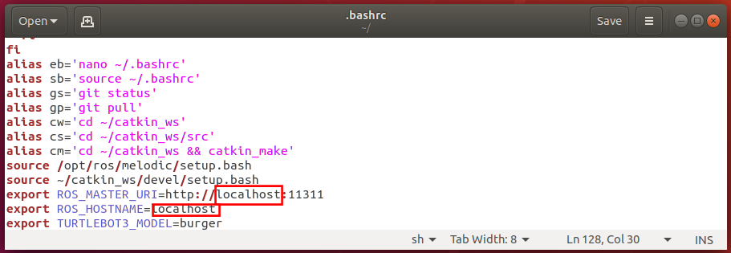

第142回 ロボット工学セミナー
ロボットの作り方
～移動ロボットの制御とROSによる動作計画実習～
ROSの基本操作
基本的なROS上で動くプログラムの書き方とコンパイル方法について説明します。
下記の実習を行うためには、リモートPCのROS_MASTER_URIとROS_HOSTNAMEをlocalhostに戻す必要があります。
エディタで~/.bashrcファイルを開きます。下記のコマンドをターミナルに入力してください。
【リモートPCで実施】
$ cd
$ gedit ~/.bashrc
下図の赤枠で囲まれた部分が変更箇所となります。

修正後、画面右上のSaveにて保存してエディタを閉じます。
次に、変更内容をシステムに反映させます。
【リモートPCで実施】
$ source ~/.bashrc
基本用語
- パッケージ
- ノードや設定ファイル、コンパイル方法などをまとめたもの
- ノード
- ROSの枠組みを利用して動作する実行ファイル
- メッセージ
- ノード間でやりとりするデータ
- トピック
- ノード間でメッセージをやりとりする際にメッセージを格納する場所
ノード、メッセージ、トピックの関係は以下の図のように表せます。
基本的に、ソフトウェアとしてのROSはノード間のデータのやりとりをサポートするための枠組みです。
加えて、使い回しがきく汎用的なノードを世界中のROS利用者で共有するコミュニティも大きな意味でのROSの一部となっています。
ワークスペース
ROSでは、プログラムをビルドする際にcatkinというソフトウェアパッケージを使用しています。
また、catkin は、 cmake というソフトウェアを使っており、ROS用のプログラムのパッケージ毎にcmakeの設定ファイルを作成することで、ビルドに必要な設定を行います。
今回はROSをインストールするためにinstall_ros_melodic.shを利用したのでワークスペースが自動的に作成されています。
install_ros_melodic.shを利用せず新しいワークスペースを作る場合、以下の手順を行う必要があります（今回は以下のコマンド入力は不要です）。
【リモートPCで実施】
$ mkdir -p ~/catkin_ws/src
$ cd ~/catkin_ws/src
$ catkin_init_workspace
Creating symlink "/home/[ユーザ名]/catkin/src/CMakeLists.txt"
pointing to "/opt/ros/melodic/share/catkin/cmake/toplevel.cmake"
$ ls
CMakeLists.txt
$ cd ..
$ ls
src
catkin_wsディレクトリ内にある、build、develは、catkinシステムがプログラムをビルドする際に使用するものなので、
ユーザが触る必要はありません。
catkin_ws/srcディレクトリは、ROSパッケージのソースコードを置く場所で、中にあるCMakeLists.txt は、
ワークスペース全体をビルドするためのルールが書かれているファイルです。
このディレクトリに、本作業用のパッケージをダウンロードします。
以下のコマンドを実行してください。
【リモートPCで実施】
$ cd ~/catkin_ws/src
$ git clone https://github.com/garcia-g/rsj_seminar_no139_ros_basics.git
$ ls
CMakeLists.txt rsj_seminar_no139_ros_basics
$
gitは、ソースコードなどの変更履歴を記録して管理する分散型バージョン管理システムと呼ばれるものです。
今回のセミナーでは詳細は触れませんが、研究開発を行う上では非常に有用なシステムですので、利用をお勧めします。
公式の解説書、Pro Gitなどを参考にして下さい。
GitHubは、ソースコードなどを格納、保管、管理するためのWebリポジトリサービスです。
オープンソースソフトウェアの開発、共同作業および配布のためによく利用されており、ROSではソースコードの保存と配布する場所としてもっとも人気なサービスとなっています。
バイナリパッケージとして配布されているROSパッケージ以外の利用をする場合、GitHubを利用します。
URLが分かれば上の手順だけで簡単にROSのパッケージが自分のワークスペースにインポートし利用することができます。
では、次にパッケージのディレクトリ構成を確認します。
ダウンロードしているパッケージがバージョンアップされている場合などには、下記の実行例とファイル名が異なったり、ファイルが追加・削除されている場合があります。
以下のコマンドを実行してください。
【リモートPCで実施】
$ cd ~/catkin_ws/src/rsj_seminar_no139_ros_basics/
$ ls
CMakeLists.txt LICENSE launch msg package.xml src
$ ls launch/
test.launch
$ ls msg/
Text.msg
$ ls src/
Publish.cpp Show.cpp
$
CMakeLists.txtとpackage.xmlには、使っているライブラリの一覧や生成する実行ファイルとC++のソースコードの対応など、このパッケージをビルドするために必要な情報が書かれています。
launchディレクトリには、複数のノードでできたシステムの定義が、msgディレクトリには、このパッケージ独自のデータ形式の定義が、srcディレクトリには、このパッケージに含まれるプログラム(ノード)のソースコードが含まれています。
catkin_makeコマンドで、ダウンロードしたrsj_seminar_no139_ros_basicsパッケージを含む、ワークスペース全体をビルドします。catkin_makeは、ワークスペースの最上位ディレクトリ(~/catkin_ws/)で行います。
ROSノードの理解とビルド・実行
先ほど作成したワークスペースを利用します。
ターミナルを開き、パッケージが正しく存在していることを確認します。
【リモートPCで実施】
$ cd ~/catkin_ws/src/
$ ls
CMakeLists.txt rsj_seminar_no139_ros_basics
$ cd ..
$
ソースファイルの編集にはお好みのテキストエディタが利用可能です。
Linuxでのプログラム開発がはじめての方には、Ubuntuにデフォルトでインストールされているgeditがおすすめです。プログラミング作業が多い方にはVisual Studio Codeがおすすめです。
お好みのテキストエディタで ~/catkin_ws/src/rsj_seminar_no139_ros_basics/src/Publish.cpp を開きます。
1
2
3
4
5
6
7
8
9
10
11
12
13
14
15
16
17
18
19
20
21
22
23
24
25
26
27
28
29
30
31
32
#include <ros/ros.h>
#include <rsj_seminar_no139_ros_basics/Text.h>
#include <string>
int main(int argc, char **argv) {
ros::init(argc, argv, "Publish");
ros::NodeHandle node;
std::string message;
std::string date;
ros::param::param<std::string>("~message", message, "test seminar 2022");
ros::param::param<std::string>("~date", date, "January 29");
ros::Publisher pub = node.advertise<rsj_seminar_no139_ros_basics::Text>("Publish", 1);
ros::Rate rate(1);
while (ros::ok()) {
ros::spinOnce();
ROS_INFO("Publishing message '%s %s'", message.c_str(), date.c_str());
rsj_seminar_no139_ros_basics::Text sample;
sample.message = message;
sample.date = date;
pub.publish(sample);
rate.sleep();
}
return 0;
}
送信ノードの作成（基本的なコードを読み解く）
このコードが実行されたときの流れを確認しましょう。
まず、先頭部分では、必要なヘッダファイルをインクルードしています。
#include <ros/ros.h>
続いて、本ノードが利用するメッセージのヘッダファイルをインクルードしています。
#include <rsj_seminar_no139_ros_basics/Text.h>
std::stringが利用されるので、ヘッダファイルをインクルードします。
#include <string>
続いて、C++のmain関数が定義されています。
本ノードは非常に簡単な構成としているため、すべての機能をmain関数に入れています。
複雑な機能や色々なデータを持つノードには、クラスとしての実装することをおすすめします。
メインページに戻る